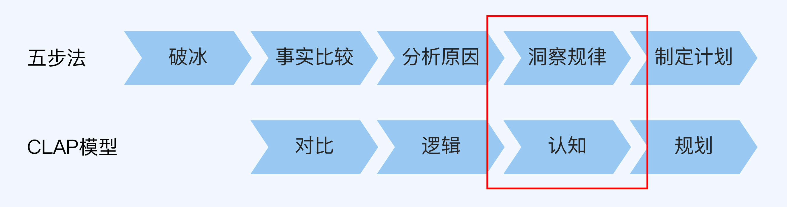
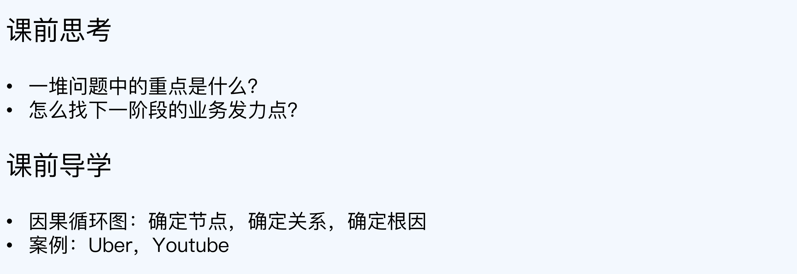
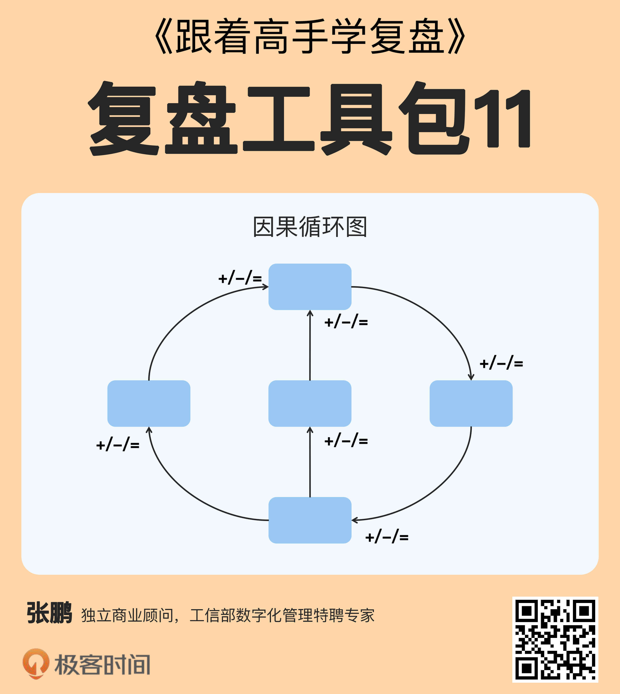
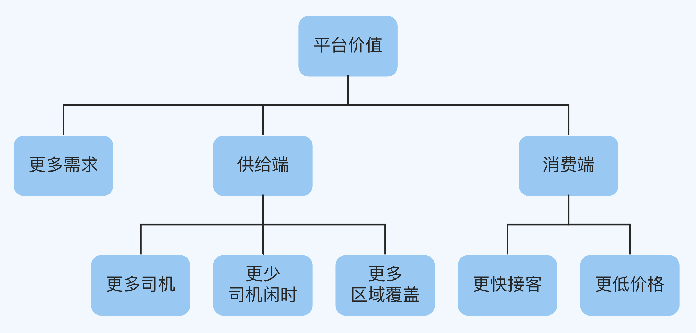
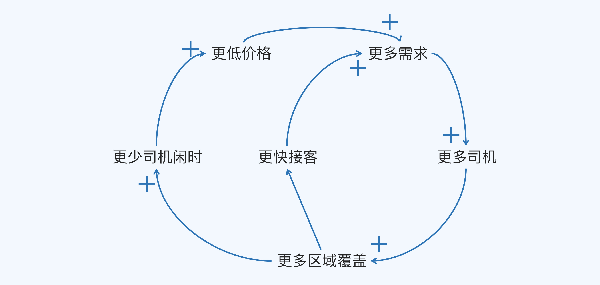
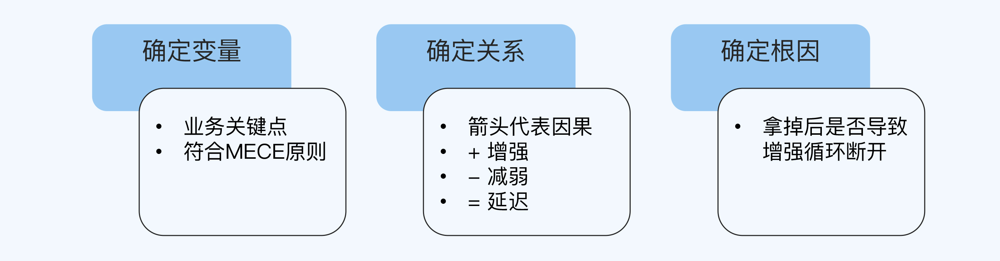
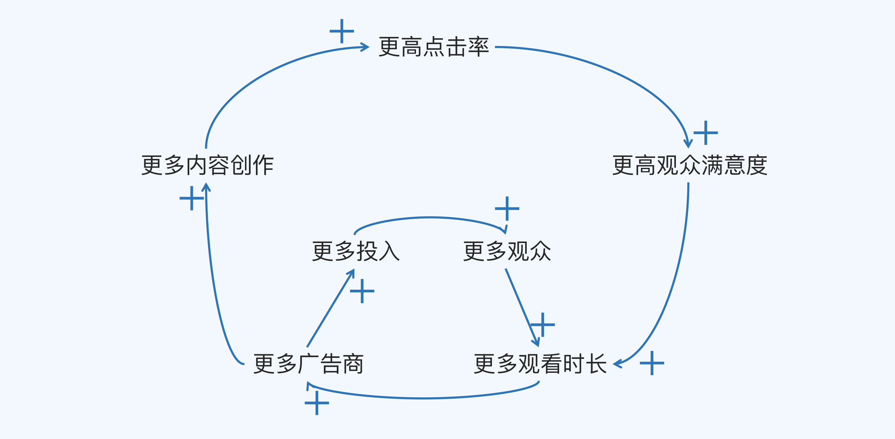
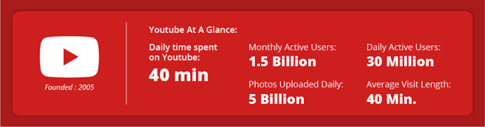

- 00 开篇词 为什么每个人都应该学会复盘？.md.html
- 01 CLAP模型：一个优秀的复盘模型是什么样的？.md.html
- 02 OPTM框架：怎么使用CLAP模型？.md.html
- 03 教练技术：怎么做复盘才能化解冲突？.md.html
- 04 制度和文化：怎么营造复盘环境？.md.html
- 05 三角法：怎么组建复盘团队？.md.html
- 06 MECE原则：怎么准备复盘资料？.md.html
- 07 五步法：如何召开一次高效的复盘会议？.md.html
- 08 事实比较：如何快速比较目标与结果？.md.html
- 09 分析原因：梳理逻辑时怎样找到切入点？.md.html
- 10 洞察规律：怎样更新认知才能找准发力点？.md.html
- 11 OKR：怎样根据复盘结论制定计划？.md.html
- 12 Double Check：怎么检查评估一次复盘的效果？.md.html
- 13 案例导学：我是怎么帮助企业做复盘的？.md.html
- 14 战略升级：5年增长100倍的跨境电商做对了什么？.md.html
- 15 业务关键点：改进一个点业绩增长50%？.md.html
- 16 组织结构设计：变动一个职位，就能带来100万_月的增量吗？.md.html
- 17 高效赋能：怎么建立流程才能把人效提升3倍？.md.html
- 18 人才培养：怎么把人才转化成实际生产力？.md.html
- 19 预算制定：人头和财务预算到底怎么定？.md.html
- 春节荐书（一）《原则》：在不确定中找到确定.md.html
- 春节荐书（二）《人类简史》：故事的力量.md.html
- 结束语 复盘，见天地见众生见自己.md.html
- 捐赠
10 洞察规律：怎样更新认知才能找准发力点？
你好，我是张鹏。
上一讲，我为你介绍了梳理逻辑时寻找切入点的方法。找到切入点，分析出问题原因之后，我们就到了洞察规律这一步，它正好对应CLAP模型的认知环节。

所谓洞察规律，就是系统地思考整个业务的运转，找准下一步计划的发力点。洞察规律的能力有多重要呢？我带你回顾一下Uber的故事吧。
2014年，Uber进入中国之后，迅速在上海、杭州、深圳、广州、成都、武汉、重庆、北京和天津等一二线核心城市开展业务。
一开始，Uber的获客模式是人肉两头拉。“人肉”是指让用户自发通过口碑传播，“两头拉”是指一边拉开车的司机，另一边拉坐车的乘客。这种模式的好处是获客非常精准，适合早期破局。
到了2015年，“滴滴”“快的”等中国本土企业也逐渐崛起，在巨大的竞争压力下，Uber对市场扩张速度的要求更高了。接下来的半年中，他们准备在华东、华南、西南和华北四大区域拓展自己的业务。
但是Uber内部有个不成文的规定——不批准任何市场费用，这也意味着不能以广告等粗暴的模式来获客，所以Uber的城市合伙人只能从运营手段本身想办法。
而当时他们面临的现实问题在于，以前的人肉两头拉模式虽然精准，但速度不够快，到了快速扩张期增长乏力，很难支撑业务的升级。
与此同时，“出行场景单一”“无法满足更多出行需求”“价格没有优势”“等车时间长”等一系列问题也都冒了出来，而且这些问题之间还会相互影响。
这种局面给当时的Uber管理层提出了一个挑战：到底哪个问题才是重中之重，怎么才能找准下一阶段的业务发力点呢？

因果循环图
为了解决战略重心问题，Uber华东区域的管理层使用了一个工具——因果循环图。

因果循环图（CLD，Casual Loop Diagram）出自1990年出版的管理学经典著作《第五项修炼》，它是这本书的作者、学习型组织理论的鼻祖彼得·圣吉（Peter M. Senge）提出的用于系统思考的工具。
那么，因果循环图要怎么用呢？我们继续看Uber华东区域业务的例子。
1. 确定节点
用因果循环图的第一步是确定节点，也就是标记业务的关键节点。
Uber华东区域一开始的业务破局还是做得不错的，得到了车主和乘客的认可，但是要在宣传资源受限的条件下拓展业务，管理层还需要深挖能够撬动整个市场运转的关键节点。
首先，他们想到的是满足更多的出行需求，于是他们标记了一个关键节点，更多需求。
接着，为了满足更多的出行需求，从供给端看，核心是更多区域覆盖，从数量和密度两个维度进行拆解，可以细分为更多司机和更少司机闲时，于是他们又标记了两个关键节点。
从消费端看，核心是乘客能更快能坐上车和车费更便宜，分别代表时间和价格两个维度，于是他们又标记了两个关键节点，更快接客和更低价格。
最后，整个逻辑树用MECE原则检查一下，确保没有问题。

到这里，关键节点就基本上找齐了。
2. 确定关系
第二步是确定关系，也就是分析连接关键节点的因果关系。
关键节点之间的关系用带箭头的曲线来表示，箭头的方向代表因果，类型有三种，分别是：
- 增强，用“+”表示。
- 减弱，用“-”表示。
- 延迟，用“=”表示。
这三种类型很好理解：
踩油门和速度之间就是增强关系，油门踩得越大，速度越快。
刹车和速度是减弱关系，刹车踩得越狠，速度越慢。
延迟在生活中更为常见，比如你在浴室拧开热水开关，需要过一段时间水温才会升高。
确定因果关系，重点是搞清楚A节点与B节点之间的关系是增强还是减弱。对于Uber来说：
- 更多需求会让更多司机来到Uber平台，所以它们的关系是更多需求增强更多司机（+）。
- 更多司机会让Uber覆盖的区域更广，所以它们的关系是更多司机增强更多区域覆盖（+）。
- 更多区域覆盖会让更多乘客也注册和使用Uber打车，并且进一步促进更少司机闲时和更快接客（+）。
- 更少司机闲时让客单价有进一步降低的空间，所以会导致更低价格（+）。
- 当更低价格和更快接客这两个乘客都最在意的痛点得到满足，会进一步促成更多需求（+）。
到这里，单个节点之间的关系就分析清楚了，Uber华东区域管理层也就可以完成Uber整个业务的拼图了。

3. 确定根因
第三步是找出根因，就是判断推动运转最底层的根因。
因果循环图非常清晰地展示了单个节点之间的直接因果关系。但是底层的根因要怎么看呢。毕竟各个节点之间是互为因果的。
我跟你分享一个小窍门：
- 连接线入口多出口少的，一般是“果”，比如更多需求。
- 连接线入口少出口多的，一般是“因”。
- 去掉之后会导致整个增强循环断裂的（“没它不行”），一般是“根因”。
从图中可以看出，更多司机和更多区域覆盖这两个节点是满足根因条件的。而更少司机闲时以及更低价格即使单独去掉，虽然会影响效率，但整个循环依然可以转动，因此属于重要因素，但并不属于根因。
我们可以从业务逻辑的角度验证一下，更多需求确实是Uber追求的终极结果，而更多司机和更多区域覆盖如果拿掉，就会导致供给端司机少，从而导致消费端注册和使用少，最终导致Uber的业务无法升级。
最终，Uber确认了以更多司机和更多区域覆盖作为提升整体业务的目标，并设定OKR来进行执行，在华东市场取得重大突破。这部分内容我会在下一讲详细介绍。
现在，因果循环图的使用就讲完了，我用一个流程图来总结一下：

为了方便你理解，我再为你讲解另一个案例，你可以像阅读推理小说一样，看看能否在我揭示谜底之前想出答案。
案例补充：Youtube
2013年，YouTube已经成为全球最大的视频平台之一。但是它的创新步伐已经放缓，一旦刹车，重新加速并不容易。
当时YouTube的CEO是Susan Wojcicki，她意识到YouTube再这样下去，会沦落为一家很普通的公司，于是决定组织高层做战略复盘。她提出了一个问题：“如果重新让YouTube走上‘10倍速’的指数型增长之路，我们到底应该怎么做？”
Youtube当时面临的考验和Uber很像，都是要在一大堆重要的事情中找到重中之重。对于YouTube来说，流量、点击率、观看率、广告、视频内容、日活……到底哪一个才是应该首先考虑的呢？
当时视频网站普遍看重点击率和日活数据，YouTube内部就有一个工程师正在开发引导观众选择“观看下一个”的推荐系统。显然，这能够对点击率的提高产生巨大的影响。
但是需要思考的是，点击率的提高是YouTube真正想要的吗？或者换句话说，业界都认为提高点击率就能提升业务，这个“常识”就一定是对的吗？
YouTube在这次战略复盘中发现，很多因素是相互影响的。它最重要的收入来自广告，但是让用户过多地点击广告，会影响用户的体验，而体验不好就可能造成用户流失，从而降低平台对广告商的吸引力。
当用户花更多宝贵的时间来观看YouTube上的视频时，这些视频必须要给他们提供乐趣，这样才能形成良性循环：
更满意的观看体验带来更长的观看时间，更长的观看时间会吸引更多的广告商，从而激励更多的内容创作者进行创作，于是又会吸引更多的观众。

根据“确定根因”的原则，“没它不行”的节点就是根因。
YouTube最终洞察到：真正的收益来源不是观看率或点击率，而是观看时长。虽然短期内，用户时长的增加甚至会降低用户对广告的点击率，但从长远来看，显然会让YouTube走上增强循环。
Susan和她的团队制定了一个BHAG（Big, Hairy, Audacious Goals，宏伟、艰难和大胆的目标）：“日均用户观看时长达到10亿小时”。在之后的4年时间里，他们通过各种努力，最终实现了这个BHAG。

小结
这一讲，我用Uber的案例为你讲解了使用因果循环图的技巧，并且通过Youtube的案例来帮助你加强理解。现在，我们来回顾一下重点内容：
- 因果循环图中的节点，就是真实业务中的关键节点，你可以理解成是关键子业务，用逻辑树进行划分，用MECE原则进行验证。
- 关键节点之间的关系用带箭头的曲线来表示，箭头的方向代表因果，类型有三种，分别是增强、减弱和延迟。
- 如果因果循环图中，某个关键节点去掉之后会导致整个增强循环断裂，那么它很可能就是根因。
思考题
这就是今天的全部内容，最后留两道思考题给你吧。
- 请你回忆一下学习Youtube案例的过程，你是什么时候找出“根因”的呢？为什么是那个时候？
- 请尝试画一下你手头项目的因果循环图，看看有什么发现或者问题。
欢迎把你的答案写在留言区，和我一起讨论。
© 2019 - 2023 Liangliang Lee. Powered by gin and hexo-theme-book.